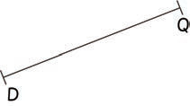
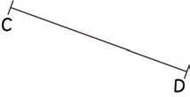
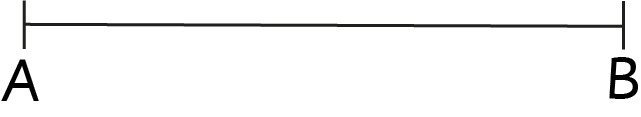
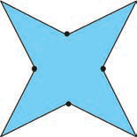

Example 2
Write the name of each of the following line segments:
(a)

(b)

(c)

Answer
(a) (b) (c)
Example 3
Write the names of all possible line segments in the following figure:
Answer
, , , , and .
Example 4
How many line segments are there in the following figure?

Answer
There are eight line segments.